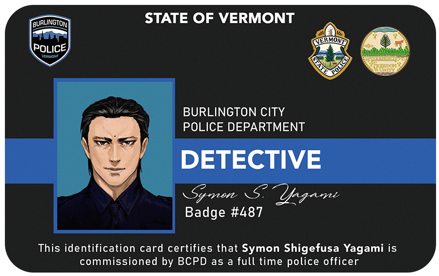
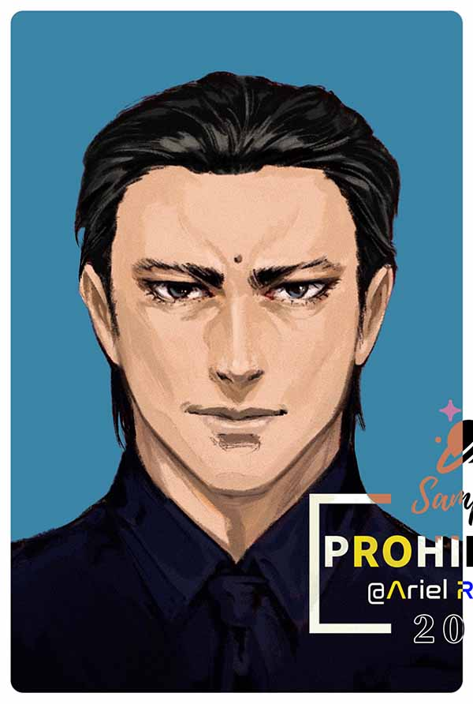
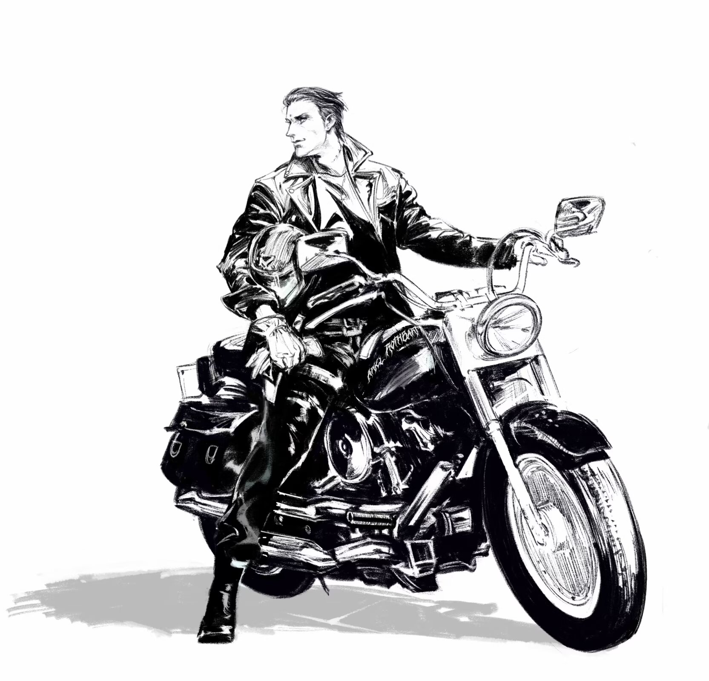
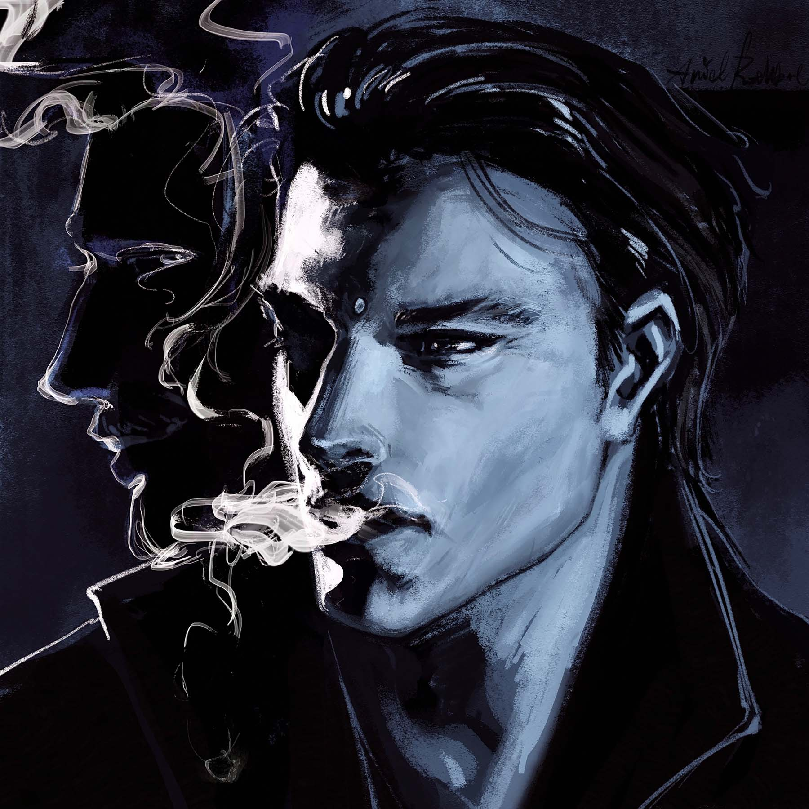
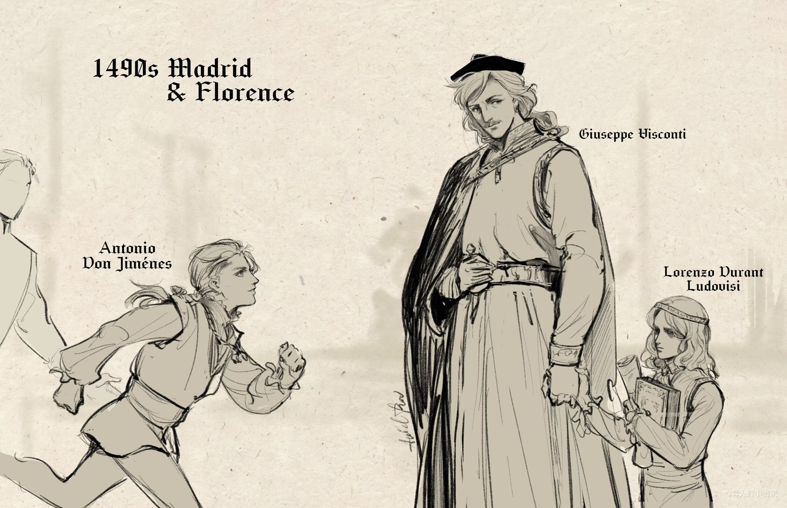
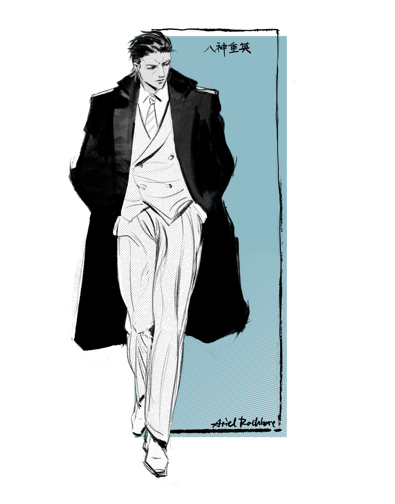

ARCHIVE RECORD · CLASSIFIED
Symon-Yagami Shigefusa
八神重英


FILE ID: 07-YS
男 10.21.1954 生于美国佛蒙特州，是家中的次子。长姐 八神伊织（Yagami Iori） 是一位犯罪肖像与侧写专家。
八神重英从佛蒙特大学法学系毕业。曾于纽约警局任职。如今回到佛蒙特警局，与肖恩 霍普（Sean Hope）警官分组行动。
据悉他经手的多起案件涉及异常，甚至超自然现象。其调查方式与常规执法存在差异。
相关人员：
菅原真（Sugahara Shin），神秘学教授，任职于佛蒙特大学。同八神在大学时相识，目前八神居住在他的祖宅别墅内。
备注：存在未归档异常特征，需持续观察。
ATTACHMENT / VISUAL RECORD






SUPPLEMENTAL NOTE / UNAUTHORIZED ENTRY
12岁时，八神重英随父母去往加州旅行。在参观某间私人博物馆时接触到了异常物品。
一枚14世纪的硬币当晚出现在了八神的随身物品中。不论将它放置在何处，最终总会回到八神的身上。
从此八神时常出现细小的异常行为，包括但不限于：
声称某件事并非自己所做、
听到过不存在的说话声、
知晓不可能触及到的信息与知识、
偶尔说出自己不熟悉的语言...
但情况并不频繁，也未影响正常生活。
根据非官方来源，其症状与典型附身现象存在高度相似性。
相关记述多来自家庭成员及非正式记录，缺乏完整医学或执法档案支持。
但部分细节在后续案件中呈现出重复性。
该段经历未被纳入正式档案系统。
附：大学时期，八神重英曾在佛蒙特大学在读期间，卷入某次校园活动的意外事故。试图提供证明时，受到了神学系新生菅原真的帮助。
菅原是当时唯一相信他的人。也是唯一能看见他身上停留着某种“存在”的人。
‹
 ›
›